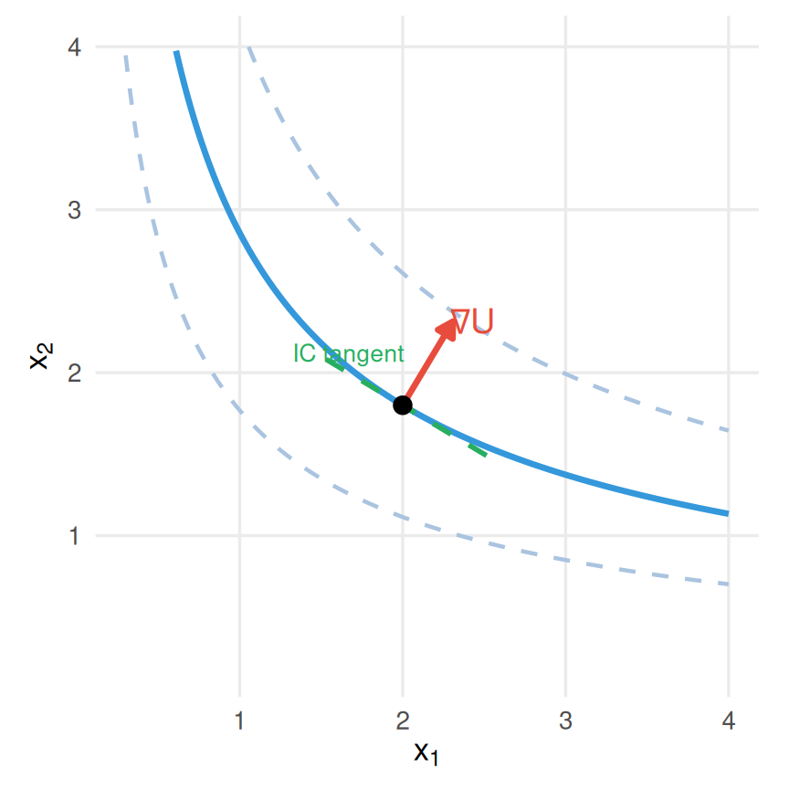
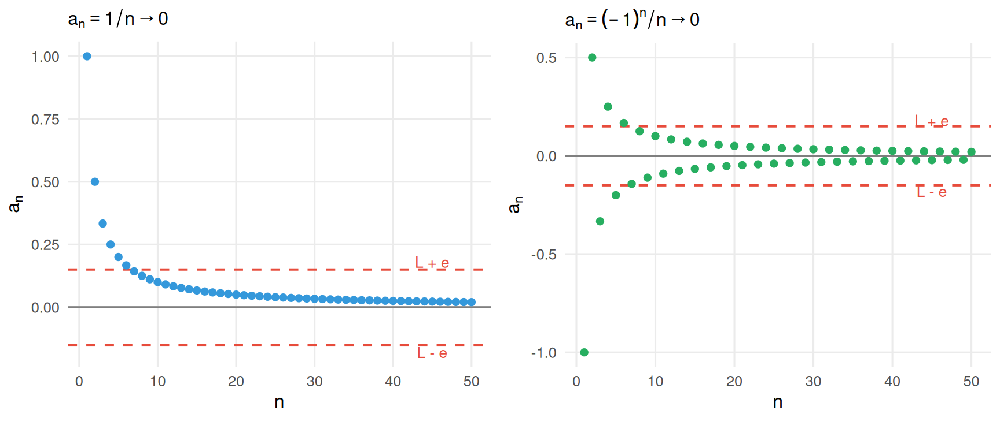
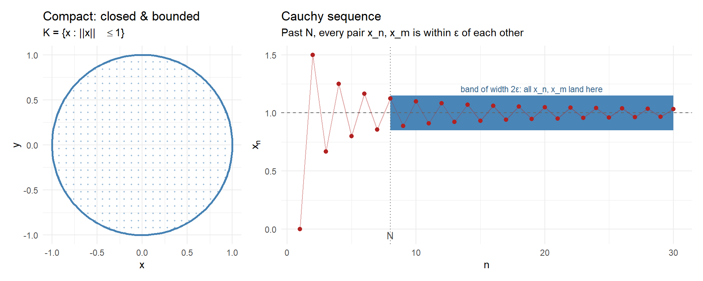
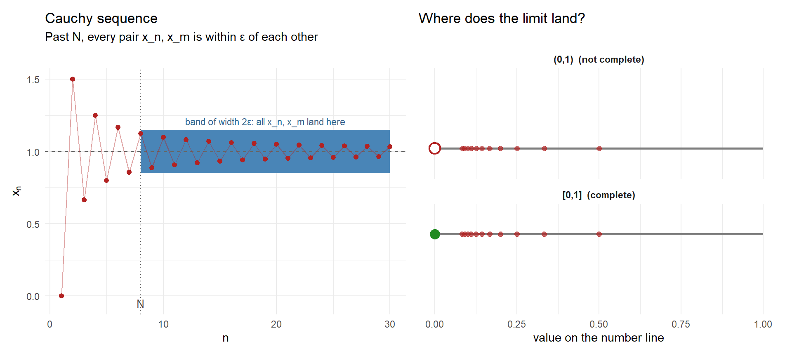
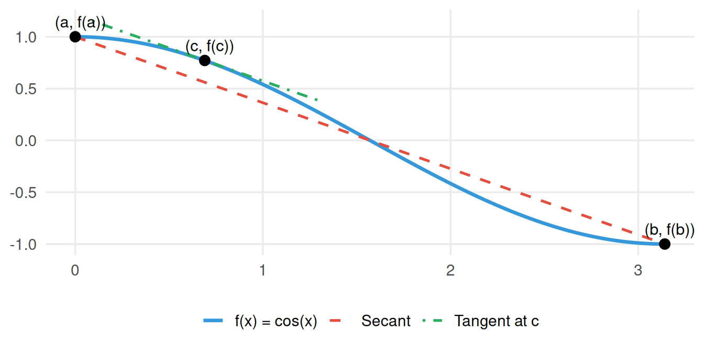
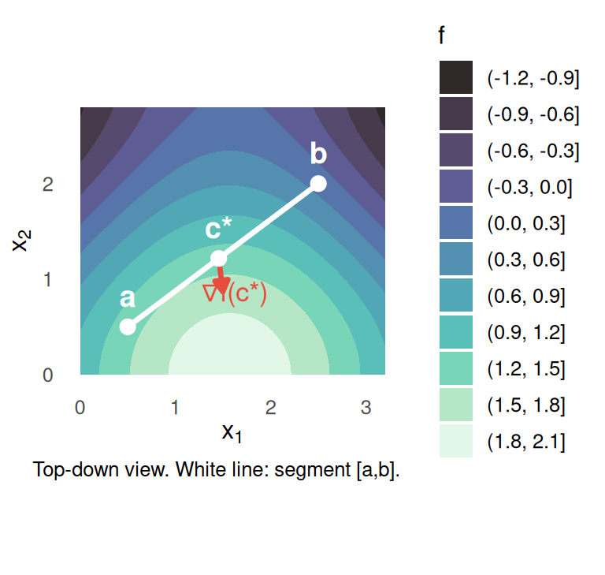
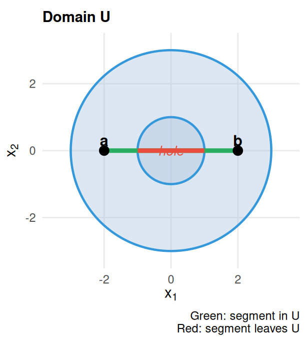
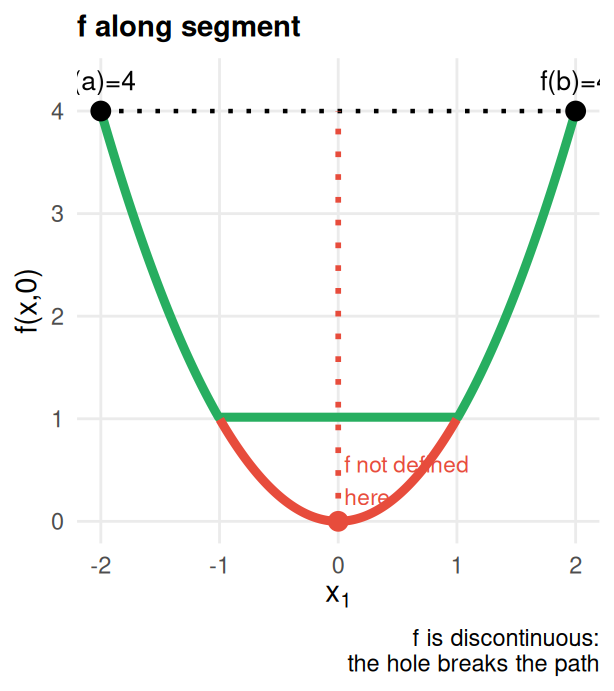
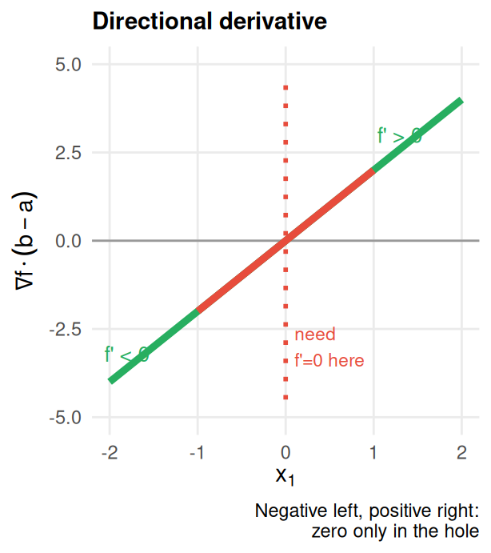

Session 1: Foundamentals in calculus for economists
2026-09-04
The purpose is that you get to know each other. That’s also the role of the pre-semester week!
Objective: study core concepts in mathematics. We will not have time to cover everything you will see during the master’s, but the class should help you practice with the most important tools and provide you with resources to know where to find relevant information in the next 2 years.
Structure: 1.5 weeks of teaching (24h) + additional hours across the semester (office hours). During this first week, we will have lectures in the morning and practice sessions in the afternoon. Total: 12h of lectures, 12h of tutorials.
Method: In the lectures, we will introduce the concepts and results and apply them in examples. You will prepare exercises for the practice sessions, which we then discuss together.
The thread running through everything: nonlinear problems can be studied locally through linear approximations. Continuity and sequences are the tools that make that idea rigorous.
I am accountable for the trade-off, but you need to state your true preferences.
Sequences are ubiquitous in mathematical analysis. Virtually every limit, every notion of convergence, and every continuity argument can be expressed as a statement about sequences.
Later in the master’s, sequences will reappear constantly in statistics and econometrics: estimators are sequences indexed by sample size, and the central question is whether they converge, and how fast.
You may check more complete resources on sequences. For instance, chapter 9 in Cummings (2021)
Definition: Sequence
A sequence in \(\mathbb{R}\) is a function \(a: \mathbb{N} \to \mathbb{R}\). We write it as \((a_n)_{n \geq 1}\) or simply \((a_n)\).
Examples:
Sequences vs. sets
\((a_n)\) is ordered and allows repetition. The sequence \(1,\, 1,\, 1,\, \ldots\) is perfectly valid. Order matters: \((1, 2, 3, \ldots) \neq (2, 1, 3, \ldots)\) as sequences.
Definition: Convergence
A sequence \((a_n)\) converges to a limit \(L \in \mathbb{R}\), written \(a_n \to L\) or \(\lim_{n\to\infty} a_n = L\), if:
\[\forall \varepsilon > 0,\; \exists N \in \mathbb{N} : n > N \implies |a_n - L| < \varepsilon\]
In words: no matter how small a tolerance \(\varepsilon\) you demand, eventually all terms of the sequence fall within that tolerance of \(L\).
A sequence that does not converge to any finite limit is called divergent.
Unpacking the quantifiers as if it was a 2-players game:

Both sequences converge to 0: one monotonically, one by oscillating. The \(\varepsilon\)-band makes convergence visible: past some threshold \(N\), every term stays inside it.
True or False? Discuss with a neighbor (1 minute each).
Answers
Theorem: Algebra of Limits
If \(a_n \to L\) and \(b_n \to M\) (both finite), then:
These rules are used constantly. Every time you compute a limit by breaking it into simpler pieces, you are applying this theorem.
Definition: Cauchy Sequence
\((a_n)\) is Cauchy if its terms eventually become arbitrarily close to each other:
\[\forall \varepsilon > 0,\; \exists N : m, n > N \implies |a_m - a_n| < \varepsilon\]
Theorem: Cauchy sequences converge
In \(\mathbb{R}\): a sequence converges if and only if it is Cauchy.
Why this is useful. To verify convergence via the definition, you need to know the limit in advance. With Cauchy, you only need to check that terms bunch together. This is often much easier.
Definition: Subsequence
A subsequence of \((a_n)\) is a sequence \((a_{n_k})_{k \geq 1}\) where \(n_1 < n_2 < n_3 < \cdots\) is a strictly increasing sequence of indices.
Theorem: Bolzano-Weierstrass
Every bounded sequence in \(\mathbb{R}\) has a convergent subsequence.
A simple example: the sequence \(((-1)^n)\) oscillates and never converges, yet it has two convergent subsequences: \((1, 1, 1, \ldots)\) and \((-1, -1, -1, \ldots)\).
Economic relevance
Bolzano-Weierstrass underpins existence proofs. When you need to extract a convergent subsequence from a sequence of strategies, prices, or allocations, this theorem does the work. It reappears in the proof of the extreme value theorem.
Theorem: Monotone Convergence
One of the most practically useful results in the course. To show convergence, you just need two things:
No need to know the limit in advance.
Example: value function iteration
In dynamic programming, the iteration \(V_{n+1}(x) = \max_a [r(x,a) + \delta V_n(x')]\) produces a sequence \((V_n)\). Under specific conditions this sequence is monotone and bounded, so it converges to the true value function \(V^*\). The monotone convergence theorem is at the core of that proof.
Can you propose definitions for continuity of a function in \(\mathbb{R}\)?
Continuity
The following are definitions of continuity:
A small check: how do you interpret the quantifiers in the \(\varepsilon\)-definition of continuity? And what does this imply?
You might choose a different \(\delta\) for different combinations of \((x,\varepsilon)\)!
Definition: Differentiability
A real-valued function \(f\) is differentiable at a point \(x_0\) if
\[\lim_{\varepsilon\rightarrow 0}\frac{f(x+\varepsilon)-f(x)}{\varepsilon}\]
Theorem: Differentiability implies continuity
If a function \(f\) is differentiable at a point \(x_0\), then it is continuous at \(x_0\).
We use the following definition of continuity:
\[\forall x \in \mathbb{R}\,\forall\epsilon>0\,\exists\delta>0\, \forall y \in \mathbb{R}:\,\|x-y\|<\delta\implies \|f(x)-f(y)\|<\epsilon\]
There exists a stronger version of continuity:
Definition: Uniform continuity
A function is uniformly continuous if
\[\forall\epsilon>0\,\exists\delta>0\:\,\forall x,y \in \mathbb{R}\, \|x-y\|<\delta\implies \|f(x)-f(y)\|<\epsilon\]
Can you state the main difference? Dos one imply the other?
Two minutes. Discuss with your neighbor:
Consider \(f(x) = x^2\) on \(\mathbb{R}\).
Key Intuition
The difference is whether \(\delta\) can depend on \(x\) (continuity) or must work simultaneously for all \(x\) (uniform continuity). On \(\mathbb{R}\), the slope of \(x^2\) grows without bound: so you need a smaller and smaller \(\delta\) as \(x\) gets large (i.e. for two numbers with equal distance, the necessary \(\delta\) is not the same depending on how large the numbers are).
Two sketches of proof:
Taken from this paper.
Theorem
Let \(f:\mathbb{R}\to\mathbb{R}\) be uniformly continuous. Then there exist constants \(A,B\ge 0\) such that
\[ |f(x)-f(y)| \;\le\; A|x-y| + B \qquad\text{for all } x,y\in\mathbb{R}. \]
In particular \(|f(x)| \le A|x| + C\) with \(C = B + |f(0)|\), so \(f\) grows at most linearly.
Apply the definition of uniform continuity with \(\varepsilon = 1\) to get \(\delta_0 > 0\), and set \(\delta = \delta_0/2\), so that
\[ |u-v| \le \delta \;\Longrightarrow\; |f(u)-f(v)| \le 1 . \]
Fix \(x,y \in \mathbb{R}\) with \(x \ne y\), and set \(n = \left\lceil |x-y|/\delta \right\rceil \in \mathbb{N}\). Define the intermediate points
\[ x_k = x + \frac{k}{n}(y-x), \qquad k = 0,1,\dots,n, \]
so that \(x_0 = x\) and \(x_n = y\). Consecutive points satisfy
\[ |x_{k+1}-x_k| = \frac{|y-x|}{n} \le \delta, \]
by the choice of \(n\), and hence \(|f(x_{k+1})-f(x_k)| \le 1\) for each \(k\).
Telescoping and applying the triangle inequality,
\[ |f(x)-f(y)| \;=\; \Bigl|\sum_{k=0}^{n-1}\bigl(f(x_{k+1})-f(x_k)\bigr)\Bigr| \;\le\; \sum_{k=0}^{n-1} |f(x_{k+1})-f(x_k)| \;\le\; n . \]
Since \(n = \lceil |x-y|/\delta \rceil < |x-y|/\delta + 1\), we obtain
\[ |f(x)-f(y)| \;\le\; \frac{1}{\delta}|x-y| + 1 , \]
which is the claim with \(A = 1/\delta\) and \(B = 1\). Taking \(y = 0\) and using \(|f(x)| \le |f(x)-f(0)| + |f(0)|\) gives the growth bound. The case \(x = y\) is trivial.
Definition: Compact Set
A set \(K \subset \mathbb{R}^n\) is compact if every open cover of \(K\) has a finite subcover. In \(\mathbb{R}^n\), this is equivalent (by the Heine-Borel theorem) to \(K\) being closed and bounded.
Definition: Complete Metric Space
A metric space \((X, d)\) is complete if every Cauchy sequence in \(X\) converges to a limit that is also in \(X\). Recall: \(\{x_n\}\) is Cauchy if \(\forall \varepsilon > 0,\, \exists N : m,n > N \Rightarrow d(x_m, x_n) < \varepsilon\).
Examples and non-examples:
| Set | Compact? | Complete? |
|---|---|---|
| \([0,1] \subset \mathbb{R}\) | ✅ closed & bounded | ✅ closed subset of \(\mathbb{R}\) |
| \((0,1) \subset \mathbb{R}\) | ❌ not closed | ❌ sequence \(1/n\) is Cauchy, limit \(0 \notin (0,1)\) |
| \(\mathbb{R}\) | ❌ not bounded | ✅ every Cauchy sequence converges |
| \(\mathbb{Q}\) | ❌ neither | ❌ \(3, 3.1, 3.14, 3.141, \ldots \to \pi \notin \mathbb{Q}\) |
| \(\{x \in \mathbb{R}^2 : \|x\| \leq 1\}\) | ✅ closed ball | ✅ |
Why economists care
Compact action sets guarantee that optimization problems have a solution (Weierstrass extreme value theorem - will study it later on). Completeness underlies fixed-point theorems (Banach, Brouwer) used to prove equilibrium existence in game theory and general equilibrium.

Theorem (Heine–Cantor)
If \(f: K \to \mathbb{R}\) is continuous on a compact set \(K \subset \mathbb{R}\), then \(f\) is uniformly continuous on \(K\).
Recall the difficulty: continuity gives you a \(\delta\) for each \(x\) separately. Uniform continuity needs one \(\delta\) that works everywhere. Compactness is what lets you pass from “one per point” to “one for all”.
Proof
Fix \(\varepsilon > 0\).
Step 1 — a radius at each point. Continuity at \(x \in K\) gives \(\delta_x > 0\) such that
\[|x - z| < \delta_x \;\implies\; |f(x) - f(z)| < \tfrac{\varepsilon}{2}.\]
We ask for \(\varepsilon/2\), not \(\varepsilon\): Step 4 compares \(f(x)\) and \(f(y)\) through a third point, so we need two halves.
Step 2 — cover, with halved radii. The intervals
\[I_x \;=\; \Bigl(x - \tfrac{\delta_x}{2},\; x + \tfrac{\delta_x}{2}\Bigr), \qquad x \in K,\]
are open and cover \(K\). By compactness there are finitely many points \(x_1,\dots,x_n\) with \(K \subset \bigcup_{i=1}^{n} I_{x_i}\). Set
\[\delta \;=\; \min_{1 \le i \le n} \frac{\delta_{x_i}}{2} \;>\; 0 .\]
The minimum is over a finite set, so it is strictly positive. This is the whole role of compactness: an infinite family of \(\delta_x\) could have infimum zero.
Step 3 — both points sit near one centre. Let \(x, y \in K\) with \(|x - y| < \delta\). Then \(x \in I_{x_i}\) for some \(i\), so \(|x - x_i| < \delta_{x_i}/2\), and
\[|y - x_i| \;\le\; |y - x| + |x - x_i| \;<\; \delta + \tfrac{\delta_{x_i}}{2} \;\le\; \tfrac{\delta_{x_i}}{2} + \tfrac{\delta_{x_i}}{2} \;=\; \delta_{x_i}.\]
So \(x\) and \(y\) are both within \(\delta_{x_i}\) of \(x_i\). Note that \(y\) need not lie in the half-interval \(I_{x_i}\) — only in the full one, which is exactly why the radii were halved in Step 2.
Step 4 — conclude. Step 1 applies to both, so
\[|f(x) - f(y)| \;\le\; |f(x) - f(x_i)| + |f(x_i) - f(y)| \;<\; \tfrac{\varepsilon}{2} + \tfrac{\varepsilon}{2} \;=\; \varepsilon .\]
Since \(\delta\) depends only on \(\varepsilon\), \(f\) is uniformly continuous. \(\blacksquare\)
Where compactness is really used
Only in Step 2, to make the family of radii finite. Drop it and the theorem fails: \(f(x) = x^2\) is continuous on \(\mathbb{R}\) but not uniformly continuous, because the required \(\delta_x\) shrinks to zero as \(x \to \infty\).
Economic relevance
When agents act on a bounded price or income set, a continuous utility or demand function is automatically uniformly continuous: small price changes produce small, uniformly controlled changes in behaviour, with no dependence on where in the set you are. The unbounded case is genuinely harder, which is one reason boundedness assumptions are so common in theory.
Knowing that a sequence converges is useful. Knowing how fast it converges is often what you actually need.
Consider two sequences that both converge to zero:
\[a_n = \frac{1}{n} \qquad \text{and} \qquad b_n = \frac{1}{n^{100}}\]
They converge to the same limit, but \(b_n\) reaches zero vastly faster. In analysis, in numerical methods, and in statistics, the rate of convergence determines what you can conclude. We need precise language for this.
Definition: Little-\(o\)
We say \(f(x) = o(g(x))\) as \(x \to x_0\) if:
\[\lim_{x \to x_0} \frac{f(x)}{g(x)} = 0\]
In words: \(f\) is negligible relative to \(g\) near \(x_0\).
Key examples as \(x \to 0\):
| Statement | True? | Why |
|---|---|---|
| \(x^2 = o(x)\) | ✅ | \(x^2/x = x \to 0\) |
| \(x = o(x^2)\) | ❌ | \(x/x^2 = 1/x \to \infty\) |
| \(e^x - 1 - x = o(x)\) | ✅ | the remainder is quadratic |
| \(e^x - 1 - x = o(x^2)\) | ❌ | \((e^x-1-x)/x^2 \to 1/2 \neq 0\) |
The last row will be crucial when we study Taylor approximations.
Definition: Big-\(O\)
We say \(f(x) = O(g(x))\) over a set \(S\) if there exist constant \(C > 0\) such that:
\[x \in S \implies |f(x)| \leq C\,|g(x)|\]
In words: \(f\) is bounded in magnitude relative to \(g\) near \(x_0\). We say \(f\) is at most of order \(g\).
For sequences
\((a_n) = O(b_n)\) if \(\exists\, C > 0\) and \(N\) such that \(n > N \implies |a_n| \leq C|b_n|\).
\((a_n) = o(b_n)\) if \(a_n / b_n \to 0\).
Key relationship: \(o(g)\) implies \(O(g)\), but not the other way around. A sequence that is \(o(b_n)\) goes to zero even after scaling by \(b_n^{-1}\); a sequence that is merely \(O(b_n)\) stays bounded after that scaling.
Solo (2 minutes), then compare with a neighbor.
Classify each as \(O(n^{-1/2})\), \(o(n^{-1/2})\), or neither, as \(n\to\infty\):
Answers

A. Linear models can capture any non-linear relationship exactly.
B. Linear functions are easy to estimate and interpret.
C. Any sufficiently smooth function can be locally approximated by a linear one.
D. The consumer’s budget set is always represented by a linear constraint.
E. Linear operators enjoy the superposition principle.
F. Numerical algorithms (OLS, QR decomposition) rely on linear algebra.
→ In practice, mainly B and C. This is why linear algebra and calculus are non-negotiable.
Theorem
If \(f\) is continuous on \([a,b]\) and differentiable on \((a,b)\), then \[\exists c \in (a,b): f(b)-f(a)=(b-a)f'(c)\]

Why do you think MVT is useful?
Discuss with a neighbor (1 minute each):
True or False: If \(f\) is differentiable and \(f'(x)=0\) for all \(x\in(a,b)\), then \(f\) is constant on \([a,b]\). (Use MVT to prove or disprove!)
True or False: If \(f\) is differentiable and \(f(a)=f(b)\), then \(\exists\, c\in(a,b)\) with \(f'(c)=0\).
Taylor’s Theorem (Lagrange remainder)
Let \(I \subset \mathbb{R}\) be an open interval containing \(a\), and let \(f \in \mathcal{C}^{n+1}(I)\). The Taylor polynomial of degree \(n\) for \(f\) about \(a\) is \[ P_n(x) \;=\; \sum_{k=0}^{n} \frac{f^{(k)}(a)}{k!}\,(x - a)^k . \] Then for every \(x \in I\) there exists \(\xi\) strictly between \(a\) and \(x\) such that \[ f(x) \;=\; P_n(x) + \frac{f^{(n+1)}(\xi)}{(n+1)!}\,(x-a)^{n+1}. \]
Weaker version. If \(f\) is only \(\mathcal{C}^n\), one still gets the qualitative (Peano) form \(f(x) = P_n(x) + o\big((x-a)^n\big)\) as \(x \to a\) — it pins down the order of the error but not its exact size.
Local approximation. Writing \(x = a+\varepsilon\), \[ f(a+\varepsilon) \;=\; \underbrace{\sum_{k=0}^{n} \frac{f^{(k)}(a)}{k!}\,\varepsilon^k}_{P_n(a+\varepsilon)} \;+\; \underbrace{O(\varepsilon^{n+1})}_{\text{remainder}}. \]
Setup. A consumer has CRRA utility \(U(c) = \frac{c^{1-\sigma}-1}{1-\sigma}\), where:
Compute derivatives at \(c^*=1\):
\[U'(c) = c^{-\sigma} \Rightarrow U'(1) = 1 \qquad U''(c) = -\sigma c^{-\sigma-1} \Rightarrow U''(1) = -\sigma\]
Degree-2 Taylor approximation:
\[U(c) \approx \underbrace{(c-1)}_{\text{linear gain}} - \underbrace{\frac{\sigma}{2}(c-1)^2}_{\text{curvature penalty}}\]
Interpretation
Consider a lottery: consumption is either \(1+\varepsilon\) or \(1-\varepsilon\) with equal probability. Expected utility is:
\[\mathbb{E}[U(c)] \approx \left(0\right) - \frac{\sigma}{2}\varepsilon^2\]
The linear terms cancel by symmetry. What remains is \(-\frac{\sigma}{2}\varepsilon^2 < 0\): the consumer strictly prefers \(c=1\) for sure. The larger \(\sigma\), the bigger the penalty. In this regard, why is CRRA utility attractive?
The problem. \(f(x) = \ln x\) is nonlinear — but economists work with it constantly (utility, production, prices). Can we linearize it usefully?
Taylor around \(x^* > 0\):
\[\ln x \approx \ln x^* + \frac{1}{x^*}(x - x^*) = \ln x^* + \frac{x - x^*}{x^*}\]
So for \(x\) close to \(x^*\), the log-deviation from \(x^*\) satisfies:
\[\ln x - \ln x^* \approx \frac{x - x^*}{x^*}\]
In words: a log-difference is approximately a percentage deviation. This is one of the reasons why using logs is so ubiquitous.
This approach is quite important in macroeonomics and you will use it a lot. See some notes by Eric Sims.
Solo (3 minutes), then compare with a neighbor.
Find the second-order Taylor expansion around the indicated point:
\(f(x) = \ln(1+x)\) around \(x=0\).
\(f(r) = \frac{1}{(1+r)^T}\) (present-value factor) around \(r=0\). (Hint: what does the approximation tell you about small interest rate changes?)
\(f(x) = e^x\) around \(x=0\).
Answers
\(\ln(1+x) \approx x - \frac{x^2}{2}\)
\(\frac{1}{(1+r)^T} \approx 1 - Tr + \frac{T(T+1)}{2}r^2\)
\(e^x \approx 1 + x + \frac{x^2}{2}\)
For (2): the linear approximation \(1-Tr\) says the present value falls linearly in the interest rate, at rate \(T\) (duration!). The quadratic term captures convexity \(\Rightarrow\) “convexity adjustment.”
Most of the time = interested in multiple variables, not a single \(x\).
Goal: Generalize everything we already know in \(\mathbb{R}\) to \(\mathbb{R}^n,\, n\in \mathbb{N}\).
Functions in \(\mathbb{R}^n\)
A function \(f: \mathbb{R}^n \rightarrow \mathbb{R}^m\) is a mapping that assigns a vector given a vector input.
Example:
Just as we defined derivatives in \(\mathbb{R}\) we can define derivatives in higher dimensions. Let \(f: \mathbb{R}^n \mapsto \mathbb{R}^m\).
Continuity
Let \(f: \mathbb{R}^n \mapsto \mathbb{R}^m\), \(x_0\in \mathbb{R}^n\) and \(f(x_0)\) its image. We say that \(f\) is continuous at \(x_0\) if:
Let \(f: \mathbb{R}^n \mapsto \mathbb{R}\). We refer to the total derivative of \(f\) at \(x_0\) as:
\[df = \frac{\partial f}{\partial x_1}(x_0)dx_1 + \ldots + \frac{\partial f}{\partial x_n}(x_0)dx_n\]
Setup. A firm’s cost function is \(C(w, r, q) = 2\,w^{1/2}\,r^{1/2}\,q\) where \(w\) = wage, \(r\) = rental rate, \(q\) = output.
Total derivative:
\[dC = \frac{\partial C}{\partial w}dw + \frac{\partial C}{\partial r}dr + \frac{\partial C}{\partial q}dq\] \[= w^{-1/2}r^{1/2}q\,dw + w^{1/2}r^{-1/2}q\,dr + 2w^{1/2}r^{1/2}\,dq\]
Interpretation
The total derivative answers: if wages, rents, and output all change simultaneously by small amounts, how much does total cost change?
Each term has a clean meaning:
The total effect is just the sum of the individual effects. This is precisely the superposition property of linear approximations.
Definition: Continuously Differentiable (\(C^1\))
A function \(f:\mathbb{R}^n\to\mathbb{R}\) is said to be continuously differentiable (or \(C^1\)) on an open set \(U\subset\mathbb{R}^n\) if for each \(i=1,\dots,n\), the partial derivative
\[\frac{\partial f}{\partial x_i}(x)\]
exists for all \(x\in U\) and is continuous in \(x\).
The gradient of a \(C^1\) function \(f:\mathbb{R}^n\to\mathbb{R}\) at a point \(x^*\) is the vector of partial derivatives:
\[\nabla f(x^*) = \begin{pmatrix} \displaystyle \frac{\partial f}{\partial x_1}(x^*) \\[1ex] \vdots \\[1ex] \displaystyle \frac{\partial f}{\partial x_n}(x^*) \end{pmatrix}\]
The gradient can be used to write the directional derivative in the direction \(v=(v_1,\dots,v_n)\):
\[D f_x(v) \;=\; v\cdot \nabla f(x) \;=\; \sum_{i=1}^n \frac{\partial f}{\partial x_i}(x)\,v_i\]
Setup. Consider the utility function \(U(x_1, x_2) = x_1^{\alpha} x_2^{1-\alpha}\) with \(\alpha \in (0,1)\).
Answers
\(\nabla U = \bigl(\alpha x_1^{\alpha-1}x_2^{1-\alpha},\; (1-\alpha)x_1^{\alpha}x_2^{-\alpha}\bigr)^\top\)
The gradient is orthogonal to the indifference curve. Any direction \(v\) along the curve keeps utility constant, so \(dU = \nabla U \cdot v = 0\). The gradient points away from it, toward higher utility, as steeply as possible.
\(MRS = \frac{\alpha\,x_2}{(1-\alpha)\,x_1}\). How many units of \(x_2\) the consumer sacrifices for one more unit of \(x_1\). The indifference curve’s slope is perpendicular to \(\nabla U\) — which is exactly what pins it down.

The jacobian of a differentiable function \(F:\mathbb{R}^n\to\mathbb{R}^m\) with components \((f_1, f_2, \ldots, f_m)\) at a point \(x^*\) is the matrix of partial derivatives:
\[J_F(x^*) = \begin{pmatrix} \dfrac{\partial f_1}{\partial x_1}(x^*) & \cdots & \dfrac{\partial f_1}{\partial x_n}(x^*) \\[1ex] \vdots & \ddots & \vdots \\[1ex] \dfrac{\partial f_m}{\partial x_1}(x^*) & \cdots & \dfrac{\partial f_m}{\partial x_n}(x^*) \end{pmatrix}\]
Note that:
\[J_F(x^*) = \begin{pmatrix} \nabla f_1^{\top} \\[1ex] \vdots \\[1ex] \nabla f_m^{\top} \end{pmatrix}\]
Setup. Demand for two goods depends on both prices:
\[Q_1(p_1, p_2) = 10 - 2p_1 + p_2, \qquad Q_2(p_1, p_2) = 8 + \tfrac{1}{2}p_1 - 3p_2\]
The Jacobian of \(Q = (Q_1, Q_2)^\top\) with respect to \((p_1,p_2)\) is:
\[J_Q = \begin{pmatrix} \partial Q_1/\partial p_1 & \partial Q_1/\partial p_2 \\[0.6ex] \partial Q_2/\partial p_1 & \partial Q_2/\partial p_2 \end{pmatrix} = \begin{pmatrix} -2 & 1 \\[0.6ex] \tfrac{1}{2} & -3 \end{pmatrix}\]
Here the demand system is linear, so \(J_Q\) is constant. In general it varies with \((p_1,p_2)\) and only describes demand locally: \(\Delta Q \approx J_Q(p^*)\,\Delta p\).
Slopes are not elasticities. The entries of \(J_Q\) are derivatives, measured in units of quantity per unit of price. \(\partial Q_1/\partial p_1 = -2\) means: raising \(p_1\) by $1 lowers demand for good 1 by 2 units. The elasticity is the unit-free rescaling
\[\varepsilon_{ij} \;=\; \frac{\partial Q_i}{\partial p_j}\,\frac{p_j}{Q_i}\]
Evaluate at \(p^\ast = (2, 1)\), where \(Q_1 = 7\) and \(Q_2 = 6\):
| \(p_1\) | \(p_2\) | |
|---|---|---|
| \(Q_1\) | \(\varepsilon_{11} = -2 \cdot \tfrac{2}{7} \approx -0.57\) | \(\varepsilon_{12} = 1 \cdot \tfrac{1}{7} \approx 0.14\) |
| \(Q_2\) | \(\varepsilon_{21} = \tfrac{1}{2} \cdot \tfrac{2}{6} \approx 0.17\) | \(\varepsilon_{22} = -3 \cdot \tfrac{1}{6} = -0.5\) |
Both goods are inelastic at this point (\(|\varepsilon_{ii}| < 1\)), which the raw Jacobian entry \(-2\) would not have told you.
Reading the matrix
We will return to this matrix in Session 2: its determinant and its invertibility are exactly what let you go from demands back to prices.
Theorem (Chain Rule)
Let \(F = (f_1,\dots,f_m)\colon \mathbb{R}^n \longrightarrow \mathbb{R}^m\) and \(a\colon \mathbb{R} \longrightarrow \mathbb{R}^n\) be \(C^1\) functions. Then the composite \(g(t) = F\bigl(a(t)\bigr):\mathbb{R}\to\mathbb{R}^m\) is \(C^1\), and for each component \(g_i\):
\[g_i'(t) \;=\; \sum_{j=1}^n \frac{\partial f_i}{\partial x_j}\bigl(a(t)\bigr)\, a_j'(t) \;=\; \nabla f_i\bigl(a(t)\bigr)\;\cdot\;\nabla a(t)\]
Putting these together gives the vector equation:
\[g'(t) \;=\; \nabla\bigl(F\circ a\bigr)(t) \;=\; J_F\bigl(a(t)\bigr)\;\times\;\nabla a(t)\]
Suppose a firm’s profit is a function of prices and wages \(\pi(p, w)\) and both depend on a policy parameter \(t\) (say, a tax). How does profit change with \(t\)?
\[\frac{d\pi}{dt} = \frac{\partial \pi}{\partial p}\frac{dp}{dt} + \frac{\partial \pi}{\partial w}\frac{dw}{dt}\]
The chain rule decomposes the total effect into: the direct effect through prices, plus the direct effect through wages.
Theorem (Mean Value Theorem in \(\mathbb{R}^n\))
Let \(U\subset\mathbb{R}^n\) be open and convex, and let \(f:U\to\mathbb{R}\) be differentiable. For any \(\mathbf{a},\mathbf{b}\in U\), there exists \(\mathbf{c}\) on the line segment \([\mathbf{a},\mathbf{b}]\) such that \[f(\mathbf{b}) - f(\mathbf{a}) = \nabla f(\mathbf{c}) \cdot (\mathbf{b}-\mathbf{a})\]
Demonstration trick
Interestingly, once you notice that the set is convex, the demonstration of the MVT in \(\mathbb{R}^n\) is very simple. You just use MVT in \(\mathbb{R}\) for the following function:
\[g(t) = f(\mathbf{x} + t(\mathbf{y} - \mathbf{x})) \quad \text{for } t \in [0, 1]\]

Let \(U\) be a donut \(\{(x,y) : 1 \leq x^2+y^2 \leq 9\}\), \(f(x,y) = x^2 - y^2\), \(\mathbf{a} = (-2, 0)\), \(\mathbf{b} = (2, 0)\).
\(f(\mathbf{a}) = f(\mathbf{b}) = 4\) so MVT would need \(\mathbf{c}\) with \(\nabla f(\mathbf{c})\cdot(\mathbf{b}-\mathbf{a}) = 0\), i.e. \(c_x = 0\). That point is in the hole.



Summary
Requiring the function to be well-defined on the segment is not just a simplification, it’s really required.
Multi-Index Notation
Let \(\alpha=(\alpha_1,\dots,\alpha_n)\in\mathbb{N}^n\). Then \[|\alpha|=\alpha_1+\cdots+\alpha_n\] For a \(C^k\) function \(f:\mathbb{R}^n\mapsto\mathbb{R}\), we write \[D^\alpha f =\frac{\partial^{|\alpha|}f} {\partial x_1^{\alpha_1}\,\cdots\,\partial x_n^{\alpha_n}}\]
Example. Take \(n=2\) and \(f(x_1,x_2) = x_1^3 x_2^2\).
Theorem (Multivariate Taylor’s Theorem)
Let \(f: \mathbb{R}^n \mapsto \mathbb{R}\) be \(C^k\) at the point \(a \in \mathbb{R}^n\). Then there exist functions \(h_\alpha \colon \mathbb{R}^n \to \mathbb{R}\), \(|\alpha| = k\), such that
\[f(x) =\sum_{|\alpha|\le k} \frac{D^\alpha f(a)}{\alpha!}\,(x - a)^\alpha \;+\; \sum_{|\alpha| = k} h_\alpha(x)\,(x - a)^\alpha\]
and
\[\lim_{x \to a} h_\alpha(x) \;=\; 0 \quad\text{for each multi-index }\alpha\]
In \(\mathbb{R}^1\), the second-order Taylor expansion is: \[f(a + \varepsilon) \approx f(a) + f'(a)\,\varepsilon + \frac{1}{2}f''(a)\,\varepsilon^2\]
In \(\mathbb{R}^2\), we expand \(f(\mathbf{a} + \boldsymbol{\varepsilon})\) where \(\boldsymbol{\varepsilon} = (\varepsilon_1, \varepsilon_2)^\top\). Applying the 1D result along each direction and collecting terms:
\[f(\mathbf{a} + \boldsymbol{\varepsilon}) \approx f(\mathbf{a}) + \underbrace{\frac{\partial f}{\partial x_1}\varepsilon_1 + \frac{\partial f}{\partial x_2}\varepsilon_2}_{\text{first-order: }{\nabla f(\mathbf{a})^\top \boldsymbol{\varepsilon}}} + \frac{1}{2}\underbrace{\left( \frac{\partial^2 f}{\partial x_1^2}\varepsilon_1^2 + 2\frac{\partial^2 f}{\partial x_1 \partial x_2}\varepsilon_1\varepsilon_2 + \frac{\partial^2 f}{\partial x_2^2}\varepsilon_2^2 \right)}_{\text{second-order: all cross and own effects}}\]
The second-order term collects four second derivatives — can we write this compactly?
The second-order term can be written as a quadratic form \(\boldsymbol{\varepsilon}^\top H_f(\mathbf{a})\,\boldsymbol{\varepsilon}\), where:
\[H_f(\mathbf{a}) = \begin{pmatrix} \dfrac{\partial^2 f}{\partial x_1^2} & \dfrac{\partial^2 f}{\partial x_1 \partial x_2} \\[2ex] \dfrac{\partial^2 f}{\partial x_1 \partial x_2} & \dfrac{\partial^2 f}{\partial x_2^2} \end{pmatrix}\]
So the full second-order expansion is:
\[\boxed{f(\mathbf{x}) \approx f(\mathbf{a}) + \nabla f(\mathbf{a})^\top (\mathbf{x}-\mathbf{a}) + \frac{1}{2}(\mathbf{x}-\mathbf{a})^\top H_f(\mathbf{a})\,(\mathbf{x}-\mathbf{a})}\]
Note: \(H_f\) is symmetric (off-diagonal terms are equal) whenever \(f \in C^2\). (should sound familiar given prerequisites)
Suppose \(F = (f_1,\dots,f_m)\colon \mathbb{R}^n \to \mathbb{R}^m\) is \(C^1\), \(x^*=(x^*_1,\dots,x^*_n)\), \(\Delta x=(\Delta x_1,\dots,\Delta x_n)\).
For each component \(f_i\) we have (by first-order Taylor’s approximation):
\[f_i(x^* + \Delta x) - f_i(x^*) \;\approx\; \frac{\partial f_i}{\partial x_1}(x^*)\,\Delta x_1 + \cdots + \frac{\partial f_i}{\partial x_n}(x^*)\,\Delta x_n\]
Overall, combining these in vector/matrix form gives:
\[F(x^* + \Delta x) - F(x^*) \;\approx\; \begin{pmatrix} \dfrac{\partial f_1}{\partial x_1}(x^*) & \cdots & \dfrac{\partial f_1}{\partial x_n}(x^*) \\[1ex] \vdots & \ddots & \vdots \\[1ex] \dfrac{\partial f_m}{\partial x_1}(x^*) & \cdots & \dfrac{\partial f_m}{\partial x_n}(x^*) \end{pmatrix} \begin{pmatrix} \Delta x_1 \\[0.5ex] \vdots \\[0.5ex] \Delta x_n \end{pmatrix}\]
Imagine you are a first-year graduate student in econ. You need to choose how much time to allocate to leisure \(l\) and study \(s\), subject to a very hard constraint: you only have \(T=16\)h available per day.
You need to maximize your welfare:
\[\max_{l,s} W(l,s) \text{ s.t. } l+s= T\]
What you can see: if there is a unique solution, then this solution must be defined by exogeneous variable \(T\) and the system of first-order equations (\(F(l,s) = 0\)). The implicit function theorem tells us how the solution would evolve if \(T\) was to change. This helps understanding comparative statics.
Theorem (Implicit Function Theorem)
Let \(f:\mathbb{R}^{n+m}\to\mathbb{R}^m\) be a continuously differentiable function, and let \(\mathbb{R}^{n+m}\) have coordinates \((x,y)\). Fix a point \((x_0,y_0)\) with \(f(x_0,y_0)=0\). If the Jacobian matrix
\[J_{f,y}(x_0,y_0) = \begin{bmatrix} \frac{\partial f_i}{\partial y_j}(x_0,y_0) \end{bmatrix}_{m\times m}\]
is invertible, then there exists an open set \(U\subset\mathbb{R}^n\) containing \(x_0\) and a unique \(C^1\) function \(g:U\to\mathbb{R}^m\) with \(g(x_0)=y_0\) and \(f\bigl(x,g(x)\bigr)=0\) for all \(x\in U\). Moreover:
\[\begin{bmatrix} \frac{\partial g_i}{\partial x_j}(x) \end{bmatrix}_{m\times n} \;=\; -\bigl[J_{f,y}\bigl(x,g(x)\bigr)\bigr]^{-1} \;\bigl[J_{f,x}\bigl(x,g(x)\bigr)\bigr]\]
Interpretation
\(g(x)\) gives you the value \(y\) that keeps the value of function \(f\) constant. The theorem does not give you \(g\)… but it answers the following question: if the variable \(x\) shifts by a small amount, by how much does the equilibrium \(y^*\) move? This is what we call comparative statics.
In plain english: if you found one solution to your original problem, then you can find how this solution would change if you had a slightly different setting from the original problem. In some sense, this tells you that it’s not completely necessary to solve for everything an additional time!
Consider a \(C^1\) function \(F(x,y)\colon \mathbb{R}^2 \to \mathbb{R}\), and suppose we know a point \((x_0,y_0)\) with \(F(x_0,y_0) = 0\) and \(\frac{\partial F}{\partial y}(x_0,y_0) \neq 0\).
Using first-order Taylor expansion of \(F\) around \((x_0,y_0)\):
\[F(x,y) \approx F(x_0,y_0) + F_x(x_0,y_0)\,(x - x_0) + F_y(x_0,y_0)\,(y - y_0)\]
Since \(F(x_0,y_0) = 0\) and we are only interested in pairs \((x,y)\) that maintain this:
\[F_x(x_0,y_0)\,(x - x_0) + F_y(x_0,y_0)\,(y - y_0) \approx 0\]
Because \(F_y(x_0,y_0) \neq 0\), we can solve for \(y - y_0\):
\[y - y_0 = -\frac{F_x(x_0,y_0)}{F_y(x_0,y_0)}\,(x - x_0)\]
Changing slightly the notation:
\[dy = -\frac{F_x(x_0,y_0)}{F_y(x_0,y_0)}\,dx\]
If we have \(y = y(x)\), this converts to:
\[y'(x_0) = -\frac{F_x(x_0,y_0)}{F_y(x_0,y_0)}\]
which is exactly the result obtained with the implicit function theorem.
The Keynesian model. Aggregate output \(Y\) is determined by three components:
\[Y = \underbrace{C(Y)}_{\text{consumption}} + \underbrace{I(r)}_{\text{investment}} + \underbrace{G}_{\text{gov. spending}}\]
Write it as:
\[F(Y, r; G) \equiv Y - C(Y) - I(r) - G = 0\]
By IFT, differentiating the constraint and solving:
\[\frac{dY}{dG} = -\frac{\partial F/\partial G}{\partial F/\partial Y} = \frac{1}{1-c} > 1 \qquad \textbf{(Keynesian multiplier)}\]
One extra dollar of government spending raises equilibrium output by \(\frac{1}{1-c} > 1\) \(\Rightarrow\) each dollar of income generates \(c\) dollars of consumption, which generates \(c^2\), and so on.
\[\frac{dY}{dr} = -\frac{\partial F/\partial r}{\partial F/\partial Y} = \frac{I'(r)}{1-c} < 0 \qquad \textbf{(IS curve slope)}\]
Higher interest rates depress investment, which reduces equilibrium output.
Takeaway
Note that never solved for \(Y\) explicitly. Still, we were able to get insights into the dynamics of the economy!
Assume you have the following production function: \[F(x,y) = x^{\alpha}y^{\beta}\] with \(0<\alpha,\beta\) and \(\alpha+\beta <1\).
Suppose the firm can sell output for price \(p\) and that each input costs \(w_x\) and \(w_y\) respectively. The firm wants to maximize profits:
\[\max_{x,y} pF(x,y) - w_x x-w_yy\]
This problem has a solution. We will study why later this week.
The first-order conditions to solve this problem are:
\[\begin{cases} p\,\alpha\,x^{\alpha-1}y^{\beta} - w_x = 0,\\[1ex] p\,\beta\,x^{\alpha}y^{\beta-1} - w_y = 0. \end{cases}\]
Define
\[G(x,y;p,w_x,w_y) = \begin{pmatrix} p\,\alpha\,x^{\alpha-1}y^{\beta} - w_x \\[0.6ex] p\,\beta\,x^{\alpha}y^{\beta-1} - w_y \end{pmatrix}\]
\(G=0\) encodes the FOCs. It has solutions \((x^*,y^*)\) for a given input vector \((p,w_x,w_y)\). The IFT will help us determine:
\[\begin{pmatrix} \partial x^*/\partial p & \partial x^*/\partial w_x & \partial x^*/\partial w_y \\[0.6em] \partial y^*/\partial p & \partial y^*/\partial w_x & \partial y^*/\partial w_y \end{pmatrix}\]
\[J_{G,(x^*,y^*)} = \begin{pmatrix} p\alpha(\alpha-1)x^{\alpha-2}y^\beta & p\alpha\beta\,x^{\alpha-1}y^{\beta-1}\\[0.8ex] p\alpha\beta\,x^{\alpha-1}y^{\beta-1} & p\beta(\beta-1)x^{\alpha}y^{\beta-2} \end{pmatrix}\]
Under \(\alpha+\beta<1\), \(\det J_{G,(x^*,y^*)}\neq0\) (we will review algebra tomorrow).
\(\Rightarrow\) By IFT, there exist unique \(C^1\) mappings \(x^*(p,w_x,w_y),\,y^*(p,w_x,w_y)\) solving \(G=0\).
The solutions to the FOC are:
\[y^* = \biggl(\frac{p\,\beta}{w_y} \,\Bigl(\tfrac{\alpha\,w_y}{\beta\,w_x}\Bigr)^{\!\alpha}\biggr)^{\! \tfrac{1}{1-\alpha-\beta}}\]
\[x^*=\biggl(\frac{p\,\alpha}{w_x} \,\Bigl(\tfrac{\beta\,w_x}{\alpha\,w_y}\Bigr)^{\!\beta}\biggr)^{\! \tfrac{1}{1-\alpha-\beta}}\]
We also have:
\[J_{G,(p,w_x,w_y)} = \begin{pmatrix} \alpha\,x^{\alpha-1}y^\beta & -1 & 0\\[0.6em] \beta\,x^\alpha y^{\beta-1} & 0 & -1 \end{pmatrix}\]
By the IFT:
\[\begin{pmatrix} \partial x^*/\partial p & \partial x^*/\partial w_x & \partial x^*/\partial w_y \\[0.6em] \partial y^*/\partial p & \partial y^*/\partial w_x & \partial y^*/\partial w_y \end{pmatrix} = -\,(J_{G,(x,y)})^{-1}\,(J_{G,(p,w_x,w_y)})\]
By Cramer’s Rule and using \(\det J_{G,(x,y)} = p^2\alpha\beta(1-\alpha-\beta)x^{2\alpha-2}y^{2\beta-2}\):
\[(J_{G,(x,y)})^{-1} = \frac{1}{p^2\alpha\beta(1-\alpha-\beta)x^{2\alpha-2}y^{2\beta-2}}\begin{pmatrix} p\beta(\beta-1)x^{\alpha}y^{\beta-2} & -p\alpha\beta\,x^{\alpha-1}y^{\beta-1}\\[0.8ex] -p\alpha\beta\,x^{\alpha-1}y^{\beta-1} & p\alpha(\alpha-1)x^{\alpha-2}y^\beta \end{pmatrix}\]
This simplifies as:
\[\begin{align} (J_{G,(x,y)})^{-1} =& \begin{pmatrix} \frac{(\beta-1)x^{2-\alpha}y^{-\beta}}{p\alpha(1-\alpha-\beta)} & - \frac{x^{1-\alpha}y^{1-\beta }}{p(1-\alpha-\beta)} \\[0.8ex] -\frac{x^{1-\alpha}y^{1-\beta}}{p(1-\alpha-\beta)} & \frac{(\alpha-1)x^{-\alpha}y^{2-\beta}}{p\beta(1-\alpha-\beta)} \end{pmatrix} \end{align}\]
\[\partial x^*/\partial p = \frac{x^*}{p(1-\alpha-\beta)}\]
\[\partial y^*/\partial p = \frac{y^*}{p(1-\alpha-\beta)}\]
\[\partial x^*/\partial w_x = \frac{(\beta-1)x^*}{w_x(1-\alpha-\beta)}\]
\[\partial y^*/\partial w_y = \frac{(\alpha-1)y^*}{w_y(1-\alpha-\beta)}\]
Note: even if we did not have closed-form solutions for the FOCs, we would still have been able to find expressions for how the solutions change with endowments.